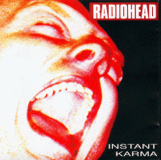

Instant Karma
RHCD980201
Tracks 1-10 live from The Hammerstein Ballroom, New York 19/Dec/97
<1> Karma Police
<2> The Bends
<3> Exit Music (For a Film)
<4> Subterranean Homesick Alien
<5> My Iron Lung
<6> No Surprises
<7> Bones
<8> Paranoid Android
<9> Fake Plastic Trees
<10> Street Spirit (Fade Out)
Tracks 11-12 recorded for MTV 11/Sep/96
<11> High & Dry
<12> Nobody Does it Better
Tracks 13-16 UK 'No Surprises' B-sides
<13> Palo Alto
<14> How I Made My Millions
<15> Airbag (live in Berlin)
<16> Lucky (live in Florence)
Type of recording : 1-10 Soundboard, 11-12 FM, 13-16 CD
Quality :